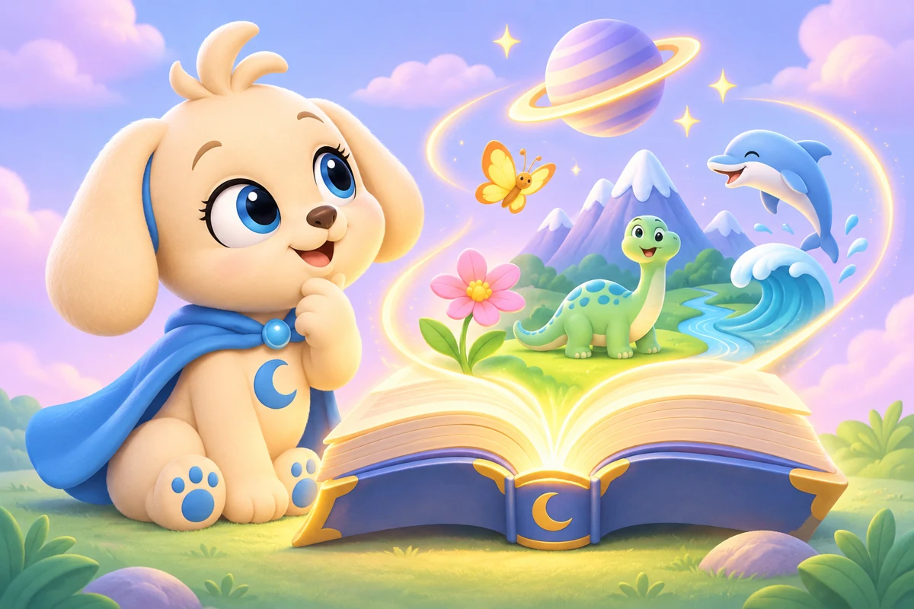

Скоро открытие
Энциклопедия Луми
Открывай удивительные тайны природы, космоса и окружающего мира!
Здесь появятся интерактивные энциклопедии, познавательные истории и исследования: космос, животные, динозавры, океаны и удивительная планета Земля.
Луми готовит для тебя новые открытия. Этот раздел скоро откроется!
На главную